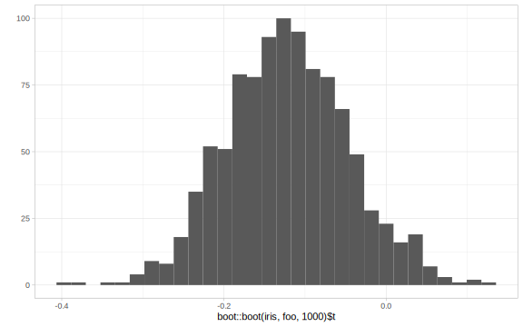
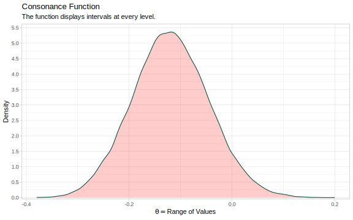

Confidence, Posteriors, and the Bootstrap
sensitivity analysis, tipping point analysis, uncertainty analysis, robust analysis, multiverse analysis, exploring assumptions, bias analysis
1 The Power of the Bootstrap
The bootstrap [1;2] is an incredibly powerful method of approximation. Indeed, frequentists are even able to approximate posterior distributions using it, In an excerpt from the paper below, Efron describes how these procedures are similar and gives examples using the parametric bootstrap.
The point of this brief note is to say that in some situations the bootstrap, in particular the parametric bootstrap, offers an easier path toward the calculation of Bayes posterior distributions. An important but somewhat under-appreciated article by Newton and Raftery (1994) made the same point using nonparametric bootstrapping. By “going parametric,” we can illustrate more explicitly the bootstrap/MCMC connection. The arguments here will be made mainly in terms of a simple example, with no attempt at the mathematical justifications seen in Newton and Raftery.
It is not really surprising that the bootstrap and MCMC share some overlapping territory. Both are general-purpose computer-based algorithmic methods for assessing statistical accuracy, and both enable the statistician to deal effectively with nuisance parameters, obtaining inferences for the interesting part of the problem. On the less salubrious side, both share the tendency of general-purpose algorithms toward overuse.
Of course the two methodologies operate in competing inferential realms: frequentist for the bootstrap, Bayesian for MCMC. Here, as in Newton and Raftery, we leap over that divide, bringing bootstrap calculations to bear on the Bayesian world. The working assumption is that we have a Bayesian prior in mind and the only question is how to compute its posterior distribution. Arguments about the merits of Bayesian versus frequentist analysis will not be taken up here, except for our main point that the two camps share some common ground.
However, they can not only approximate posterior distributions, but confidence distributions too. Confidence distributions are an incredibly dense and technical topic and is practically an umbrella term to refer to multiple concepts, for example, they can refer to confidence curves, confidence densities and deviance functions. For a definitive source to learn more about what they are, see the following [3;4]
In a paper prepared for Efron’s Fisher lecture, he writes that confidence distributions may provide the key to syncretism between frequentist and bayesian motivations:
Fiducial distributions, or confidence densities, of- fer a way to finesse this difficulty. A good argument can be made that the confidence density is the posterior density for the parameter of interest, after all of the nuisance parameters have been integrated out in an objective way. If this argument turns out to be valid, then our progress in constructing approximate confidence intervals, and approximate confidence densities, could lead to an easier use of Bayesian thinking in practical problems. This is all quite speculative, but here is a safe prediction for the 21st century: statisticians will be asked to solve bigger and more complicated prob- lems. I believe that there is a good chance that objective Bayes methods will be developed for such problems, and that something like fiducial infer- ence will play an important role in this develop- ment. Maybe Fisher’s biggest blunder will become a big hit in the 21st century!
Indeed, some authors have shown that the bootstrap distribution is equal to the confidence distribution because it meets the definition of a confidence distribution. [5;6;7]. Some have even referred to posteriors as a quick and dirty approximation to confidence distributions. [8]
Properties of Confidence DistributionsXie and Singh, as summarized by Fraser define these properties as:
The first is the classical definition CL and defines the confidence distribution function as the distribution function version of the confidence quantile function \(θ\) ̃\(β\), where \((−∞,θ ̃β(y0))\) is a \(β\) level confidence interval.
The second definition (2.1) identifies a confidence distribution function \(H(θ;y)\) as a distribution function in θ for each given y and as a pivot with a uniform distribution for eachθ. But this also closely identifies with what Fisher (1930) offered: fiducial but with Fisher’s promotion replaced by a claim that the argument is pure frequentist. Of course it is pure frequentist just as Fisher (1930) was pure frequentist, except for Fisher’s accompanying claim to having purer probabilities, which was then a direct confrontation to the Bayes aficionados of the time.
The third definition (2.2) essentially gives just the quantile equivalent say \(θ ̃u(y\)) of the distribution function where u is Uniform (0,1). Aren’t confidence quantile and confidence upper bound just different labelling for the same object? Confidence distributions can have many properties: the distribution function should of course be \(Uniform(0,1)\), but also it should inherit continuity when present in the model, should use all available information, and should generally be sensible. These properties aren’t really addressed in the authors’ proposal. A promotion of confidence distributions should acknowledge these inherent issues and also mention marginal and conditional conflicts as discussed in the literature.
The bootstrap distribution and the asymptotic consonance distribution would be defined as:
\[H_{n}(\theta)=1-P\left(\hat{\theta}-\hat{\theta}^{*} \leq \hat{\theta}-\theta | \mathbf{x}\right)=P\left(\hat{\theta}^{*} \leq \theta | \mathbf{x}\right)\]
Efron writes,
As the authors point out, all of this has something to do with the bootstrap. Let \(θˆ∗i,i=1,2,...,B\) represent B bootstrap replications ofθˆ, an estimator of parameter θ(possibly in the presence of nuisance parameters). The \(α\)-th empirical quantile of the θˆ∗’s is then theupper endpoint of a first-order accurate-levelαconfidence interval. In this sense, the bootstrap distribution is an approximate confidence distribution. The BCa density, Efron & Tibshirani (1998), improves the confidence accuracy by reweighting the \(Bθˆ∗\) values. Let Gˆbe this empirical cdf, and \(z0\) and a be the bias correction and acceleration constants in my 1987 paper. Rather than equal weights 1/B, the BCa density puts weight proportional to \(φ(zθi/(1+azθi)−z0)(1+azθi)2φ(zθi+z0)[zθi=%−1Gˆ(θˆ∗i)−z0]onθˆ∗i\). The reweighted bootstrap distribution then becomes a second-order accurate confidence distribution. Efron (2012) discusses this construction in the context of objective Bayes inference.
Fraser, however, argues that the connection is nothing special
The bootstrap.The bootstrap as in Section 2.3 provides an approximation to the distributions described by a model, and in doing this the bootstrap can also eliminate the influence of nuisance parameters. It can be applied to statistics or to pivots, with faster effect using suitable pivots. It can be used with least squares, or with maximum like lihood statistics, or with statistical quantities, or anywhere where distributions are wanted. Ofcourse confidence calculations are just one such use but there are many others including of course testing. So there is no particular attachment of the bootstrap to confidence distribution functions other than providing an approximate means of calculation for such.
Certain bootstrap methods such as the BCa method and t-bootstrap method also yield second order accuracy of consonance distributions.
\[H_{n}(\theta)=1-P\left(\frac{\hat{\theta}^{*}-\hat{\theta}}{\widehat{S E}^{*}\left(\hat{\theta}^{*}\right)} \leq \frac{\hat{\theta}-\theta}{\widehat{S E}(\hat{\theta})} | \mathbf{x}\right)\]
Here, I demonstrate how to use these particular bootstrap methods to arrive at consonance curves and densities.
We’ll use the Iris dataset and construct a function that’ll yield a correlation coefficient and we will try to estimate the confidence intervals for them.
2 The Nonparametric Bootstrap
iris <- datasets::iris
foo <- function(data, indices) {
dt <- data[indices, ]
c(cor(dt[, 1], dt[, 2], method = "p"))
}We can now use the curve_boot() method to construct a function. The default method used for this function is the “Bca” method provided by the bcaboot package (also written by Efron).
I will suppress the output of the function because it is unnecessarily long. But we’ve placed all the estimates into a list object called y.
The first item in the list will be the consonance distribution constructed by typical means, while the third item will be the bootstrap approximation to the consonance distribution.
ggplot2::qplot(boot::boot(iris, foo, 1000)$t, geom = "histogram") +
theme_light()
ggcurve(data = y[[2]], type = "cd", nullvalue = TRUE, fill= "red") +
theme_light()
We can also print out a table for TeX documents
ztable(gg <- curve_table(data = y[[1]]))| Lower Limit | Upper Limit | Interval Width | Interval Level (%) | CDF | P-value | S-value (bits) | |
|---|---|---|---|---|---|---|---|
| 2500 | -0.14 | -0.10 | 0.05 | 25.0 | 0.62 | 0.75 | 0.42 |
| 5000 | -0.17 | -0.07 | 0.10 | 50.0 | 0.75 | 0.50 | 1.00 |
| 7500 | -0.20 | -0.03 | 0.17 | 75.0 | 0.88 | 0.25 | 2.00 |
| 8000 | -0.21 | -0.02 | 0.19 | 80.0 | 0.90 | 0.20 | 2.32 |
| 8500 | -0.22 | -0.01 | 0.21 | 85.0 | 0.92 | 0.15 | 2.74 |
| 9000 | -0.24 | 0.00 | 0.25 | 90.0 | 0.95 | 0.10 | 3.32 |
| 9500 | -0.26 | 0.03 | 0.29 | 95.0 | 0.98 | 0.05 | 4.32 |
| 9750 | -0.28 | 0.05 | 0.33 | 97.5 | 0.99 | 0.03 | 5.32 |
| 9900 | -0.30 | 0.08 | 0.38 | 99.0 | 1.00 | 0.01 | 6.64 |
More bootstrap replications will lead to a smoother function. But for now, we can compare these two functions to see how similar they are.
If we wanted to look at the bootstrap standard errors, we could do so by loading the fifth item in the list
where in the top row, theta is the point estimate, and sdboot is the bootstrap estimate of the standard error, sdjack is the jacknife estimate of the standard error. z0 is the bias correction value and a is the acceleration constant.
The values in the second row are essentially the internal standard errors of the estimates in the top row.
One can also construct the confidence density, here I provide an example from the pvaluefunction R package The consonance curve and density are nearly identical. With more bootstrap replications, they are very likely to converge. [aadland2015ajcn]
library("pvaluefunctions")
#> Error in library(package, pos = pos, lib.loc = lib.loc, character.only = TRUE, : there is no package called 'pvaluefunctions'
result <- bcaboot::bcajack(
x = iris, B = 10000, func = foo,
alpha = c((1:99) / 100), verbose = FALSE
)
bca <- data.frame(result[["lims"]][, 1])
ggplot2::qplot(bca$result...lims......1., geom = "density") +
theme_less()
3 The Parametric Bootstrap
For the examples above, we mainly used nonparametric bootstrap methods. Here I show an example using the parametric Bca bootstrap and the results it yields.
data(diabetes, package = "bcaboot")
X <- diabetes$x
y <- scale(diabetes$y, center = TRUE, scale = FALSE)
lm.model <- lm(y ~ X - 1)
mu.hat <- lm.model$fitted.values
sigma.hat <- stats::sd(lm.model$residuals)
t0 <- summary(lm.model)$adj.r.squared
y.star <- sapply(mu.hat, rnorm, n = 1000, sd = sigma.hat)
tt <- apply(y.star, 1, function(y) summary(lm(y ~ X - 1))$adj.r.squared)
b.star <- y.star %*% XNow, we’ll use the same function, but set the method to bcapar for the parametric method.
bcadf <- (bcaboot::bcapar(
t0 = t0, alpha = c((1:99) / 100),
tt = tt, bb = b.star, cd = 1
)[["lims"]][, 1])Now we can look at our outputs.
ggplot2::qplot((unlist(bcadf)), geom = "density") +
theme_less()
That concludes our demonstration of the bootstrap method to approximate consonance functions.